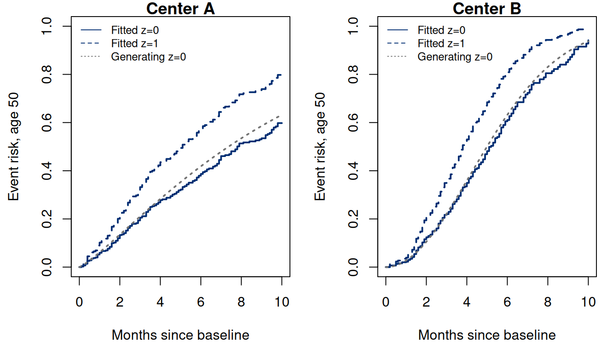
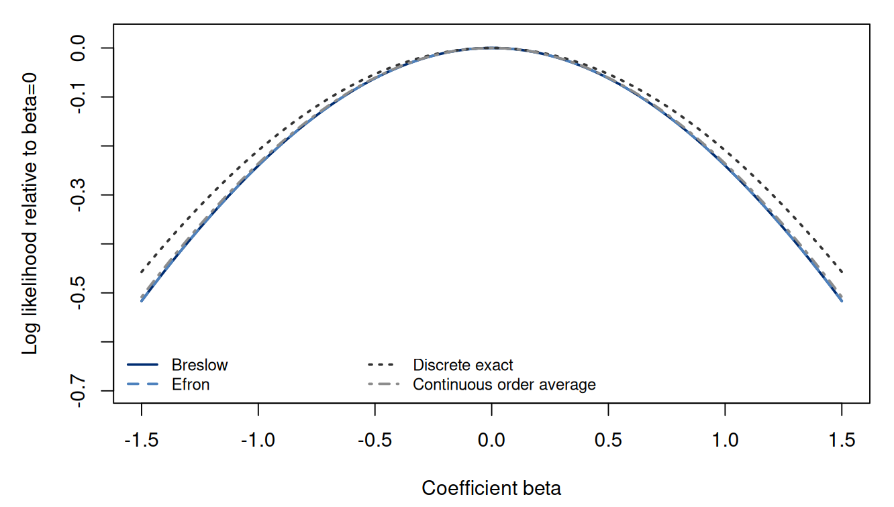

Chapter 8. Stratification and tied event times
8.1 Which part of the model should be shared?
Chapter 7 separated a relative-hazard parameter from an unspecified baseline hazard. That flexibility did not remove every restriction. A standard Cox model still says that one baseline curve, multiplied by fixed covariate factors, describes everyone. In a study spanning hospitals, disease stages, or enrollment eras, this may be more structure than the scientific question requires. The recording clock raises a separate question: several events can share one recorded time even when the underlying times are continuous.
These issues enter different parts of the argument. Stratification changes which people are compared in a risk set and which baseline hazards are shared. A tie method changes how a set of simultaneous recorded failures contributes to the partial likelihood. Both choices affect the statistical comparison. We derive their contributions to the partial likelihood before fitting models, then ask what the fitted coefficients and baseline curves tell us.
The starting assumptions remain independent subjects, correctly specified event and time-origin definitions, and noninformative censoring conditional on the covariates and stratum used in the model. Relevant groups must have overlap in covariates and observable follow-up through the reporting horizon. The new baseline flexibility does not make informative loss to follow-up disappear.
8.2 A baseline curve for each stratum
Let be a known baseline stratum; here counts strata, whereas denotes survival. We write each covariate profile and its coefficient vector as matching -dimensional column vectors. The design matrix has one row per person, and a separate intercept is absorbed into the baseline hazard. The stratified proportional-hazards model is (8.1) There is no assumed proportionality between and for different strata. The coefficient vector is shared. Thus the model allows different underlying time patterns while retaining one within-stratum covariate association.
Compare this with adding stratum indicators: The indicator model restricts all stratum baseline hazards to be constant multiples of one curve. Stratification removes that restriction but also removes a single estimated hazard ratio for changing stratum. Its baseline functions can cross. They can have different peaks or growth rates. A fitted still concerns comparisons within the same stratum and at the same time.
A variable constant within each stratum cannot have an identifiable separate coefficient in (8.1). For example, can always be absorbed into . Stratifying on a hospital therefore allows hospital-specific baseline curves, but it does not estimate a hospital coefficient alongside those unrestricted curves. A continuous age effect can be fitted within broad age strata because age still varies inside them. This is different from adding a redundant coefficient for the very category used to define a stratum.
8.3 Partial likelihood within the appropriate risk sets
At an event time in stratum , define For now assume distinct event times within a stratum, and denote the event subject by . Conditional on one event in this risk set, its identity has probability (8.2) The baseline cancels because it is common to the members of this risk set. It would not cancel if the denominator mixed subjects from different strata with different baseline hazards. Consequently the stratified partial likelihood multiplies within-stratum factors: (8.3) The construction compares locally, then adds evidence across strata. It does not pretend that the marginal populations have identical composition.
Write for the exponentially weighted mean in , and for its weighted covariance. Differentiating the log likelihood gives (8.4) The coefficient is identified by variation within informative risk sets. A stratum with no events supplies no event factor. A risk set in which a covariate is constant supplies no information about that covariate. Dividing a study into many tiny strata can therefore lose information, even when the baseline flexibility is scientifically defensible.
For example, suppose one event occurs in each of two strata. Stratum A has three group-0 and one group-1 participant at risk, and its event is in group 1. Stratum B has one group-0 and three group-1 participants at risk, and its event is in group 0. For , their contribution is At the two score increments are and , and their information increments are both . The fitted common coefficient is zero, but the two local comparisons are not identical. Pooling all eight participants into each denominator would replace the two weighted group fractions by ; its information at zero would be rather than . Mixing strata also prevents cancellation of a common baseline when their baseline hazards differ. The full implementation therefore subsets the risk set before it calculates weights.
8.4 Baseline estimation and interpretation after stratification
With fitted, the Breslow baseline estimator is now stratum-specific: (8.5) Each denominator belongs to the same stratum as its numerator. An absolute survival prediction needs both a covariate profile and a stratum: (8.6) The shared hazard ratio acts on a different baseline in each stratum. Comparing predicted risks across strata therefore combines baseline differences with covariate associations.
Standardizing stratum-specific risks to a chosen distribution is possible, but the target weights must be stated. For weights summing to one, is a standardized descriptive risk for that mixture. It is not the prediction for an unspecified new hospital whose baseline curve was never observed. Assigning a new stratum requires additional modeling or transport assumptions.
A shared is also an assumption. To allow a group effect to differ between two strata, include and while retaining separate baselines. The coefficient of the interaction is a difference between within-stratum log hazard ratios. It can be tested through an appropriate nested-model comparison if prespecified and adequately supported. Allowing stratum-specific baselines alone does not allow stratum-specific covariate slopes.
8.4.1 A conditional hazard ratio need not survive averaging
Even if the same holds in every stratum, the marginal hazard need not have a constant group ratio. For common target weights and a scalar group coefficient, standardize survival as Differentiating its negative logarithm gives (8.7) The survivors’ stratum weights depend on both time and group because survival differs across strata. The weighted baseline rate in this fraction therefore need not cancel between and . A conditional hazard ratio can coexist with a time-varying marginal hazard ratio, even before considering different initial group compositions.
We have changed the target by averaging. A standardized risk contrast describes the chosen population mixture, while the common coefficient describes a within-stratum hazard comparison. Their different values can follow the same fitted model. Reporting each with its target makes the comparison interpretable.
8.5 A connected experiment with different baseline shapes
The complete R example reuses the 600 baseline covariate profiles from Chapter 6. It leaves that chapter’s outcomes intact. For a separate, explicitly synthetic experiment it assigns a center and generates new outcomes. Center B is more frequent among profiles, so a pooled comparison mixes group association with center composition.
The generating baseline cumulative hazards are and the shared coefficients are , , with age measured in decades from 50. Their baseline hazard ratio changes with ; a constant center indicator cannot reproduce both shapes. Event times are obtained by inverting , where is unit exponential. Independent exponential censoring and administrative closure at month 10 complete the observation model.
| Model | SE() | |||
|---|---|---|---|---|
| Pooled | 0.8099 | 0.1011 | 0.2597 | -2279.4578 |
| Center indicator | 0.5273 | 0.1123 | 0.2669 | -2261.7733 |
| Stratified center | 0.5625 | 0.1114 | 0.2769 | -1970.7171 |
The realized sample contains 410 events. The pooled group coefficient is , the group coefficient after adding a center indicator is , and the stratified group coefficient is , compared with generating . The indicator model’s group-estimate proximity in this realization does not establish proportional center baselines. Nor does the stratified estimate have to equal its generating value in a finite sample. The stratified likelihood conditions within center-specific risk sets, so its raw log likelihood is on a different basis from the pooled rows; subtracting these displayed values does not produce a valid ordinary likelihood-ratio comparison of those models.
8.5.1 From first principles
The implementation constructs the stratified log likelihood and score
directly, maximizes them, and checks the result against
coxph. It also calculates each baseline from its own risk
sets and verifies basehaz(centered=FALSE) [6], [7], [8].
For event row i, let center and
time be the observed vectors, Z the group/age
matrix, and eta its fitted linear predictor. The risk-set
calculation is:
Run the complete R example
Dependencies: base R, survival. This complete block includes the data, setup and calculations. Run it in a fresh R session. Short code excerpts above explain individual steps; this block supplies their shared setup. Figures and tables are written to a temporary directory.
Complete R example
# Complete R example. Synthetic data; no external files are required.
biomedical.cohort <- function(n, seed) {
old.seed <- if (exists(".Random.seed", envir=.GlobalEnv)) get(".Random.seed", envir=.GlobalEnv) else NULL
on.exit(if (is.null(old.seed)) {if (exists(".Random.seed", envir=.GlobalEnv)) rm(".Random.seed",envir=.GlobalEnv)} else assign(".Random.seed",old.seed,envir=.GlobalEnv))
set.seed(seed)
z <- rbinom(n,1,.45); age <- runif(n,35,70); age10 <- (age-50)/10
eta <- log(9)-.35*z-.20*age10
event.time <- exp(eta)*(-log(runif(n)))^(1/1.6)
censor.time <- pmin(rexp(n,.035),10)
data.frame(id=seq_len(n),z=z,age=age,age10=age10,
time=pmin(event.time,censor.time),status=as.integer(event.time<=censor.time),
event.time=event.time,censor.time=censor.time)
}
local({
previous.directory <- getwd()
example.directory <- tempfile("biomedical-example-")
dir.create(example.directory)
setwd(example.directory)
on.exit(setwd(previous.directory))
dir.create("generated",showWarnings=FALSE)
# Stratification and tied-time examples.
# The opening cohort and parametric-regression data supply the shared examples.
# From first principles: within-stratum risk sets and explicit tie likelihoods.
# Standard R workflow: survival::coxph(), basehaz(), and survfit().
options(stringsAsFactors=FALSE,digits=10)
library(survival)
dir.create('results',showWarnings=FALSE);dir.create('figures',showWarnings=FALSE)
original <- biomedical.cohort(600L,675408)
stopifnot(nrow(original)==600,all(original$time>0))
# Reuse baseline profiles; this is a separate new outcome experiment.
set.seed(675410)
center <- ifelse(runif(nrow(original)) < ifelse(original$z==1,.75,.30),'B','A')
k <- ifelse(center=='A',1.2,2); scale <- ifelse(center=='A',10,6)
eta <- .5*original$z + .3*original$age10
T <- scale * (rexp(nrow(original))/exp(eta))^(1/k)
C <- pmin(rexp(nrow(original),.04),10)
dat <- data.frame(id=original$id,z=original$z,age10=original$age10,
center=factor(center),time=pmin(T,C),status=as.integer(T<=C))
write.csv(dat,'results/ch10-center-cohort.csv',row.names=FALSE)
pooled <- coxph(Surv(time,status)~z+age10,data=dat,ties='breslow')
indicator <- coxph(Surv(time,status)~z+age10+center,data=dat,ties='breslow')
stratified <- survival::coxph(Surv(time,status)~z+age10+strata(center),data=dat,
ties='breslow',x=TRUE,model=TRUE)
Z <- as.matrix(dat[c('z','age10')])
strat.ll <- function(b) {
eta <- drop(Z%*%b)
sum(vapply(which(dat$status==1),function(i) {
rr <- which(dat$center==dat$center[i] & dat$time>=dat$time[i])
m <- max(eta[rr]);eta[i]-m-log(sum(exp(eta[rr]-m)))
},0.0))
}
strat.score <- function(b) {
eta<-drop(Z%*%b)
Reduce(function(a,b)a+b,lapply(which(dat$status==1),function(i) {
rr<-which(dat$center==dat$center[i] & dat$time>=dat$time[i])
w<-exp(eta[rr]-max(eta[rr]));w<-w/sum(w)
Z[i,]-colSums(Z[rr,,drop=FALSE]*w)
}))
}
manual<-optim(c(0,0),function(b)-strat.ll(b),gr=function(b)-strat.score(b),
method='BFGS',hessian=TRUE,control=list(reltol=1e-12,maxit=1000))
stopifnot(manual$convergence==0,max(abs(manual$par-coef(stratified)))<2e-5,
abs(strat.ll(coef(stratified))-stratified$loglik[2])<1e-8,
max(abs(strat.score(coef(stratified))))<1e-5,
max(abs(solve(manual$hessian)-vcov(stratified)))<2e-5)
center.table<-data.frame(model=c('Pooled','Center indicator','Stratified center'),
beta.z=c(coef(pooled)['z'],coef(indicator)['z'],coef(stratified)['z']),
beta.age=c(coef(pooled)['age10'],coef(indicator)['age10'],coef(stratified)['age10']),
se.z=vapply(list(pooled,indicator,stratified),function(f)sqrt(vcov(f)['z','z']),0.0),
loglik=vapply(list(pooled,indicator,stratified),function(f)f$loglik[2],0.0))
write.csv(center.table,'results/ch10-center-models.csv',row.names=FALSE)
# Each stratum baseline, at z=0 and age=50, uses only its own risk set.
b<-coef(stratified)
base<-do.call(rbind,lapply(levels(dat$center),function(s) {
rows<-which(dat$center==s); ds<-dat[rows,]; zz<-Z[rows,,drop=FALSE]
evt<-sort(ds$time[ds$status==1]); ee<-drop(zz%*%b)
jump<-vapply(evt,function(t)1/sum(exp(ee[ds$time>=t])),0.0)
data.frame(center=s,time=evt,jump=jump,H0=cumsum(jump))
}))
pkg<-basehaz(stratified,centered=FALSE)
for(s in levels(dat$center)) {
bb<-base[base$center==s,];pp<-pkg[as.character(pkg$strata)==s,]
h<-approx(pp$time,pp$hazard,xout=bb$time,method='constant',f=0,rule=2)$y
stopifnot(max(abs(h-bb$H0))<1e-9)
}
write.csv(base,'results/ch10-stratified-baseline.csv',row.names=FALSE)
profiles<-do.call(rbind,lapply(levels(dat$center),function(s) {
bb<-base[base$center==s,]; grid<-seq(0,10,by=.1)
H<-c(0,bb$H0)[findInterval(grid,bb$time)+1L]
data.frame(center=s,time=grid,risk.z0=-expm1(-H),risk.z1=-expm1(-H*exp(b['z'])),
truth.z0=-expm1(-(grid/ifelse(s=='A',10,6))^ifelse(s=='A',1.2,2)))
}))
write.csv(profiles,'results/ch10-stratum-risk.csv',row.names=FALSE)
# Standard prediction requires a covariate profile AND its fitted stratum.
new.profiles <- data.frame(z=c(0,1,0,1),age10=0,
center=factor(c('A','A','B','B'),levels=levels(dat$center)))
package.curves <- survival::survfit(stratified,newdata=new.profiles,
stype=2,ctype=1,conf.type='log-log',conf.int=.95)
package.summary <- summary(package.curves,times=c(5,8),extend=FALSE)
package.predictions <- do.call(rbind,lapply(seq_len(nrow(new.profiles)),function(j) {
# A one-row newdata summary is a vector even when several strata were fitted.
one.curve <- survival::survfit(stratified,newdata=new.profiles[j,,drop=FALSE],
stype=2,ctype=1,conf.type='log-log',conf.int=.95)
one.summary <- summary(one.curve,times=c(5,8),extend=FALSE)
bb <- base[base$center==new.profiles$center[j],]
manual.H <- c(0,bb$H0)[findInterval(one.summary$time,bb$time)+1L]
expected <- exp(-manual.H*exp(b['z']*new.profiles$z[j]))
stopifnot(max(abs(one.summary$surv-expected))<1e-9)
data.frame(center=new.profiles$center[j],z=new.profiles$z[j],age=50,
time=one.summary$time,risk=1-one.summary$surv,
lower=1-one.summary$upper,upper=1-one.summary$lower)
}))
write.csv(package.predictions,'results/ch10-package-predictions.csv',row.names=FALSE)
# Manual Breslow and Efron for the rounded recurring cohort.
rounded <- original
rounded$time <- ceiling(rounded$time/.5)*.5
Zr<-as.matrix(rounded[c('z','age10')]);evt<-sort(unique(rounded$time[rounded$status==1]))
tied.ll<-function(b,method) {
eta<-drop(Zr%*%b)
sum(vapply(evt,function(t) {
rr<-which(rounded$time>=t);dd<-which(rounded$time==t & rounded$status==1)
m<-max(eta[rr]);S<-sum(exp(eta[rr]-m));D<-sum(exp(eta[dd]-m));d<-length(dd)
numerator<-sum(eta[dd]-m)
if(method=='breslow')numerator-d*log(S)
else numerator-sum(log(S-(0:(d-1))*D/d))
},0.0))
}
fits<-lapply(c('breslow','efron'),function(method) {
pkg<-coxph(Surv(time,status)~z+age10,data=rounded,ties=method)
opt<-optim(c(0,0),function(b)-tied.ll(b,method),method='BFGS',
hessian=TRUE,control=list(reltol=1e-12,maxit=1000))
stopifnot(opt$convergence==0,max(abs(opt$par-coef(pkg)))<2e-5,
abs(tied.ll(coef(pkg),method)-pkg$loglik[2])<1e-8,
max(abs(solve(opt$hessian)-vcov(pkg)))<2e-5)
data.frame(method=method,beta.z=coef(pkg)['z'],se.z=sqrt(vcov(pkg)['z','z']),
beta.age=coef(pkg)['age10'],se.age=sqrt(vcov(pkg)['age10','age10']),
loglik=pkg$loglik[2],manual.beta.z=opt$par[1],manual.beta.age=opt$par[2])
})
ties.table<-do.call(rbind,fits)
default.rounded <- survival::coxph(Surv(time,status)~z+age10,data=rounded)
stopifnot(default.rounded$method=='efron',
max(abs(coef(default.rounded)-as.numeric(unlist(ties.table[2,c('beta.z','beta.age')]))))<1e-10)
writeLines(c('coxph default: efron',
'ties=exact: conditional event-subset likelihood (conditional logistic)',
'same-time events are included before same-time censoring'),
'results/ch10-package-convention.txt')
write.csv(ties.table,'results/ch10-rounded-fits.csv',row.names=FALSE)
write.csv(rounded[c('id','z','age10','time','status')],'results/ch10-rounded-cohort.csv',row.names=FALSE)
# Exact conditional subset likelihood: small enough to enumerate independently.
small<-read.csv(text="id,time,status,known.at.5,event.by.5\nA,1,1,TRUE,1\nB,2,1,TRUE,1\nC,2,0,FALSE,NA\nD,3,0,FALSE,NA\nE,4,1,TRUE,1\nF,4,1,TRUE,1\nG,5,0,TRUE,0\nH,6,1,TRUE,0\nI,6,0,TRUE,0\nJ,7,0,TRUE,0\nK,8,1,TRUE,0\nL,8,0,TRUE,0\n")
small$z<-as.integer(small$id %in% c('A','C','E','G','I','K'))
small.ll<-function(beta,method) {
w<-exp(beta*small$z)
sum(vapply(sort(unique(small$time[small$status==1])),function(t) {
rr<-which(small$time>=t);dd<-which(small$time==t & small$status==1);d<-length(dd)
S<-sum(w[rr]);D<-sum(w[dd]);num<-sum(log(w[dd]))
if(method=='exact')num-log(sum(combn(w[rr],d,FUN=prod)))
else if(method=='breslow')num-d*log(S)
else num-sum(log(S-(0:(d-1))*D/d))
},0.0))
}
small.fits<-do.call(rbind,lapply(c('breslow','efron','exact'),function(method) {
fit<-coxph(Surv(time,status)~z,data=small,ties=method)
opt<-optimize(function(b)-small.ll(b,method),c(-3,3),tol=1e-12)
stopifnot(abs(opt$minimum-coef(fit))<1e-6,
abs(small.ll(coef(fit),method)-fit$loglik[2])<1e-10)
data.frame(method=method,beta=coef(fit),SE=sqrt(vcov(fit)[1,1]),
HR=exp(coef(fit)),loglik=fit$loglik[2])
}))
write.csv(small.fits,'results/ch10-small-tie-fits.csv',row.names=FALSE)
# Single tied risk set at month4: one failure from each four-person group.
beta.grid<-seq(-1.5,1.5,by=.025)
one.set<-function(beta) {
w<-c(rep(1,4),rep(exp(beta),4)); failed<-c(1,5);S<-sum(w);D<-sum(w[failed]);num<-prod(w[failed])
order.avg<-mean(c(num/(S*(S-w[failed[1]])),num/(S*(S-w[failed[2]]))))
c(Breslow=num/S^2,Efron=num/(S*(S-D/2)),
DiscreteExact=num/sum(combn(w,2,FUN=prod)),ContinuousOrderAverage=order.avg)
}
likelihood.curves<-data.frame(beta=beta.grid,t(vapply(beta.grid,one.set,numeric(4))))
write.csv(likelihood.curves,'results/ch10-one-set-likelihood.csv',row.names=FALSE)
worked<-data.frame(method=names(one.set(log(2))),likelihood=one.set(log(2)))
write.csv(worked,'results/ch10-one-set-worked.csv',row.names=FALSE)
stopifnot(abs(worked$likelihood[1]-1/72)<1e-12,
abs(worked$likelihood[2]-1/63)<1e-12,
abs(worked$likelihood[3]-1/31)<1e-12,
abs(worked$likelihood[4]-7/440)<1e-12)
tab<-c('\\begin{tabular}{lrrrr}\\toprule',
'Model & $\\widehat\\beta_z$ & SE($\\widehat\\beta_z$) & $\\widehat\\beta_A$ & $\\ell_P(\\widehat\\beta)$\\\\\\midrule',
vapply(seq_len(nrow(center.table)),function(i)sprintf('%s & %.4f & %.4f & %.4f & %.4f\\\\',
center.table$model[i],center.table$beta.z[i],center.table$se.z[i],
center.table$beta.age[i],center.table$loglik[i]),''),
'\\bottomrule\\end{tabular}')
writeLines(tab,'results/ch10-center-table.tex')
tab<-c('\\begin{tabular}{lrrrr}\\toprule',
'Tie method & $\\widehat\\beta_z$ & SE & HR & $\\ell_P(\\widehat\\beta)$\\\\\\midrule',
vapply(seq_len(nrow(small.fits)),function(i)sprintf('%s & %.5f & %.5f & %.5f & %.5f\\\\',
small.fits$method[i],small.fits$beta[i],small.fits$SE[i],
small.fits$HR[i],small.fits$loglik[i]),''),'\\bottomrule\\end{tabular}')
writeLines(tab,'results/ch10-small-table.tex')
tab<-c('\\begin{tabular}{lrrrr}\\toprule',
'Tie method & $\\widehat\\beta_z$ & SE($\\widehat\\beta_z$) & $\\widehat\\beta_A$ & $\\ell_P(\\widehat\\beta)$\\\\\\midrule',
vapply(seq_len(nrow(ties.table)),function(i)sprintf('%s & %.6f & %.6f & %.6f & %.6f\\\\',
ties.table$method[i],ties.table$beta.z[i],ties.table$se.z[i],ties.table$beta.age[i],
ties.table$loglik[i]),''),'\\bottomrule\\end{tabular}')
writeLines(tab,'results/ch10-rounded-table.tex')
write.csv(data.frame(package=c('R','survival'),
version=c(as.character(getRversion()),as.character(packageVersion('survival')))),
'results/ch10-software-versions.csv',row.names=FALSE)
save.plot<-function(stem,draw,width=7.4,height=4.2) {
cairo_pdf(paste0('figures/',stem,'.pdf'),width,height,family='serif');draw();dev.off()
png(paste0('figures/',stem,'.png'),width*180,height*180,res=180);draw();dev.off()
}
save.plot('ch10-strata',function(){
par(mfrow=c(1,2),mar=c(4.3,4.3,1,1))
for(s in levels(dat$center)) {
p<-profiles[profiles$center==s,]
plot(p$time,p$risk.z0,type='s',ylim=c(0,1),col='#002D72',lwd=2,
xlab='Months since baseline',ylab='Event risk, age 50',main=paste('Center',s))
lines(p$time,p$risk.z1,type='s',lty=2,col='#002D72',lwd=2)
lines(p$time,p$truth.z0,col='gray45',lty=3,lwd=2)
legend('topleft',c('Fitted z=0','Fitted z=1','Generating z=0'),lty=1:3,
col=c('#002D72','#002D72','gray45'),bty='n',cex=.8)
}
})
save.plot('ch10-ties',function(){
vals<-as.matrix(likelihood.curves[,-1]);zero<-one.set(0)
vals<-sweep(log(vals),2,log(zero),'-')
par(mar=c(4.3,4.7,1,1))
matplot(beta.grid,vals,type='l',lty=1:4,lwd=2,col=c('#002D72','#4D81BD','gray20','gray55'),
xlab='Coefficient beta',ylab='Log likelihood relative to beta=0',
ylim=c(min(vals)-.18,.02))
legend('bottomleft',c('Breslow','Efron','Discrete exact','Continuous order average'),
lty=1:4,lwd=2,col=c('#002D72','#4D81BD','gray20','gray55'),
bty='n',ncol=2,cex=.8)
})
summary<-data.frame(quantity=c('center.events','center.A.events','center.B.events','stratified.hr.z',
'rounded.distinct.event.times','rounded.largest.event.tie'),
value=c(sum(dat$status),sum(dat$status[dat$center=='A']),sum(dat$status[dat$center=='B']),
exp(b['z']),length(evt),max(table(rounded$time[rounded$status==1]))))
write.csv(summary,'results/ch10-summary.csv',row.names=FALSE)
capture.output(sessionInfo(),file='results/ch10-sessionInfo.txt')
print(center.table);print(package.predictions);print(ties.table);print(small.fits);print(worked);print(summary)
cat("\nSelected numerical results\n")
for (candidate in c("reader", "summary", "summary.mc", "perf", "comparison", "route.comparison", "test", "tab", "exact", "workflow.ci", "coef.tab", "evaluation.table")) {
if (exists(candidate, inherits=FALSE)) {
value <- get(candidate, inherits=FALSE)
if (is.data.frame(value) || is.matrix(value)) { cat(candidate, "\n"); print(utils::head(value,8)) }
}
}
cat("R", as.character(getRversion()), "\n")
})
This excerpt shows a step inside the preceding complete R example; it uses that block’s data and setup.
rr <- which(center == center[i] & time >= time[i])
weights <- exp(eta[rr] - max(eta[rr]))
weighted.mean <- colSums(Z[rr, , drop = FALSE] * weights) /
sum(weights)
score.increment <- Z[i, ] - weighted.meanSubtracting the largest predictor stabilizes the exponential weights without changing their normalized mean. It is an arithmetic safeguard, not a change in the statistical model.
8.5.2 Standard R workflow
The formula encodes a common group/age slope and separate center baselines:
This excerpt shows a step inside the preceding complete R example; it uses that block’s data and setup.
library(survival)
stratified <- survival::coxph(Surv(time,status) ~
z + age10 + strata(center), data=dat, ties="breslow",
model=TRUE, x=TRUE)
summary(stratified)$coefficients
survival::basehaz(stratified, centered=FALSE)
new.profiles <- data.frame(z=c(0,1,0,1), age10=0,
center=factor(c("A","A","B","B")))
curves <- survival::survfit(stratified, newdata=new.profiles,
stype=2, ctype=1, conf.type="log-log", conf.int=.95)
summary(curves, times=c(5,8), extend=FALSE)Here strata(center) is a model special, rather than a
request to estimate a center coefficient. Every profile carries a center
label; omitting it leaves the baseline undefined for the requested
prediction. In both routes age 50 and group 0 define each zero-covariate
reference. The table reports model-based SEs and maximized log partial
likelihoods. The two calculations also compare the stratified score and
information at the fitted coefficient. For prediction it checks all four
profile curves at months 5 and 8 against (8.6). These are the same
estimands as the plotted curves, not marginal risks averaged over
centers. The printed pointwise log–log intervals account for fitted
baseline and coefficient uncertainty under the working model; they do
not validate transport to a new center.


8.6 What exactly is a tie?
Ties can arise from rounding a continuous clock, genuinely discrete event opportunities, or grouping an interval observation into one label. These mechanisms need not imply the same likelihood. In particular, an interval-censored event is not automatically an exact event at its right endpoint; Chapter 5 derived its interval probability. Here we discuss recorded exact-time analyses and state their working convention.
At a recorded event time , let be the event set, , and the risk set before events. A same-time censor belongs to this denominator under the event-first convention. In the following tie formulas, and are sums of relative-hazard weights, not survival probabilities or event counts. Define Using the distinct-event formula times without updating anything is the Breslow approximation: (8.8) It treats every recorded tied event as seeing the full initial risk weight. For distinct events , this is exactly the earlier factor. For a sizable tied group, the approximation overlooks the removal of earlier failures whose latent order was not recorded.
8.7 Efron’s fractional removal
If tied failures had an unobserved order, the remaining risk weight after each failure would decrease by the weight of that particular failure. Efron’s approximation replaces those unknown removals by equal fractions of the total tied-event weight: (8.9) At the first failure nothing has been removed; before the second, of the tied weight is removed; and so on. This reduces to Breslow when . It approximates sequential removal of failed risk weight without enumerating the missing order. The approximation does not identify the recording mechanism, and there is no claim here that it is uniformly best for every set of weights or every origin of ties.
8.7.1 From first principles
The log denominator is especially easy to implement:
This excerpt shows a step inside the preceding complete R example; it uses that block’s data and setup.
numerator <- sum(eta[event.rows] - shift)
S <- sum(exp(eta[risk.rows] - shift))
D <- sum(exp(eta[event.rows] - shift))
ell.efron <- numerator - sum(log(S - (0:(d-1))*D/d))The same predictor shift must appear in numerator and denominators. A partial likelihood checked numerically at a fitted coefficient can reveal a convention mismatch that comparing coefficient signs would miss.
The complete likelihood function sums this contribution over recorded event times. Calculating the Breslow denominator alongside it lets us compare each fitted coefficient with the likelihood that produced it.
8.7.2 Standard R workflow
In the parametric-regression cohort, rounding all exits upward to half-month recording times produces 20 distinct event times, with as many as 36 events sharing one recorded time. Apply both routes to these same rounded records:
This excerpt shows a step inside the preceding complete R example; it uses that block’s data and setup.
rounded <- biomedical.cohort(600L,675408)
rounded$time <- ceiling(rounded$time/.5)*.5
breslow.fit <- survival::coxph(Surv(time,status) ~ z + age10,
data=rounded, ties="breslow")
efron.fit <- survival::coxph(Surv(time,status) ~ z + age10,
data=rounded, ties="efron")
default.fit <- survival::coxph(Surv(time,status) ~ z + age10,
data=rounded)
coef(default.fit) # Efron is the default.| Tie method | SE() | |||
|---|---|---|---|---|
| breslow | 0.496990 | 0.102718 | 0.257645 | -2202.711243 |
| efron | 0.514936 | 0.102767 | 0.265823 | -2188.337856 |
Breslow estimates for group and age, whereas Efron estimates . Their differences reflect denominator conventions applied after ordering information was lost, rather than different data or different optimization targets within a method. The SEs are model-based approximations for the respective working likelihoods. Manual numerical Hessians may differ slightly from the package’s analytical information because finite-difference derivatives are approximations. Neither coefficient proximity to the known generating value nor a larger raw log likelihood selects a superior observation model.
8.8 Two meanings of “exact”
For genuinely discrete event opportunities, suppose event odds in a risk set satisfy Conditional on exactly events, the nuisance odds multiplier cancels. The conditional probability of the observed subset is (8.10) The denominator sums over subsets, not repeated selections with replacement. It is a conditional logistic likelihood. A continuous proportional-hazards model over a long recording interval does not generally imply proportional event odds; has a different form. Calling (8.10) exact names its conditional model, not every possible continuous observation process.
Directly listing all subsets is useful for a small check but quickly becomes impractical. The denominator is the degree- elementary symmetric sum of the risk weights. If denotes the corresponding sum among the first weights, partitioning subsets according to whether they contain the last participant gives An implementation must update degrees downward so that the same weight is not reused in the current pass. For the worked eight-person risk set:
This excerpt shows a step inside the preceding complete R example; it uses that block’s data and setup.
w <- c(rep(1,4), rep(2,4))
d <- 2
E <- c(1, numeric(d))
for (wi in w) {
for (k in d:1) E[k+1] <- E[k+1]+wi*E[k]
}
E[d+1]The result is 62, matching explicit pair enumeration. The recursion computes the same conditional denominator; it does not turn a continuous observation model into a discrete one.
A different continuous-order construction averages the distinct-event
partial-likelihood factors over the
latent orderings of the tied failures:
(8.11) Using a sum instead
of an average changes a parameter-independent factor, so maximization is
unchanged. It is not the subset denominator in (8.10). The installed
survival implementation’s ties="exact" uses
the conditional subset likelihood, which the complete R example
independently enumerates on a small cohort. Software labels must be
connected to formulas rather than assumed to mean the same thing across
programs.
The order construction retains the initial risk set and supposes only the tied failures are removed between these latent choices. A full likelihood for rounded times would instead integrate the event and observation model over the recording intervals, potentially including unobserved censoring order. Equation (8.11) is a partial-likelihood tie construction, not that full coarsened-data likelihood.
8.9 Interpreting a worked tied risk set
For a separate tie calculation, return to the twelve-person cohort’s observation times and statuses. Assign hypothetical group labels: A, C, E, G, I, and K have , and the others have . These labels were not part of the original recurrence records. At month 4, four people from each group remain at risk, and one from each has an event. At , their weights are 1 and 2, the total risk weight is 12, and the tied-event weight is 3. The four contributions are For the discrete denominator, the six all-zero pairs have weight 1, the sixteen mixed pairs have weight 2, and the six all-one pairs have weight 4, totaling 62. The numerator is 2. The continuous-order average instead averages and . Different parameter-independent scales are removed in Figure 8.2 by subtracting each log likelihood at .


8.9.1 From first principles
To compute the subset likelihood for the tiny cohort, enumerate possible event subsets at each event time:
This excerpt shows a step inside the preceding complete R example; it uses that block’s data and setup.
w <- exp(beta*small$z)
risk.rows <- which(small$time >= t)
event.rows <- which(small$time == t & small$status == 1)
d <- length(event.rows)
denominator <- sum(combn(w[risk.rows], d, FUN=prod))
contribution <- prod(w[event.rows])/denominatorThis is practical only for small risk sets; the downward recursion earlier computes the same denominator more efficiently. It is a subset sum, not an average over latent event orders.
8.9.2 Standard R workflow
For these same twelve records and the same binary group:
This excerpt shows a step inside the preceding complete R example; it uses that block’s data and setup.
exact.fit <- survival::coxph(Surv(time,status) ~ z,
data=small, ties="exact")
coef(exact.fit)
sqrt(diag(vcov(exact.fit)))
exact.fit$loglik[2]Fitting all event times in the tiny cohort gives the following checked estimates:
| Tie method | SE | HR | ||
|---|---|---|---|---|
| breslow | 0.09761 | 0.81886 | 1.10253 | -11.33717 |
| efron | 0.09761 | 0.81886 | 1.10253 | -11.20364 |
| exact | 0.10250 | 0.83901 | 1.10794 | -10.51013 |
Maximizing all three likelihoods directly gives the displayed
estimates. The exact row checks the conditional subset
target implemented by coxph [6]; the continuous-order average
in Figure 8.2 has a different target and is
not relabeled as a package fit. Breslow and Efron happen to produce the
same coefficient here; their likelihoods differ by a constant for the
balanced tied risk set. That is a property of this example, not an
identity for general data.
Indeed at month 4, and for every . Consequently , independent of . All other event factors coincide, so their full log likelihoods differ only by and have the same score. Unequal group composition or an unbalanced event subset would generally remove this cancellation.
An analysis report should name its recording resolution, event/censor ordering, stratification variables, shared slopes, and tie method. Show a sensitivity comparison if ties are common enough for the method to matter. Avoid comparing raw likelihood values across different conditional models as if a larger value automatically selected a superior model. Distinguish numerical agreement, model adequacy, and scientific interpretation. The next chapter asks how to diagnose the remaining restrictions rather than equating successful optimization with a defensible analysis.
8.10 Exercises
What stratification can identify. Let independent subjects obey with known baseline stratum , common -slope vector, fixed covariates, distinct event times and conditionally independent censoring. Derive the within-stratum partial-likelihood contribution. Prove that a separate coefficient for a variable constant within each stratum is unidentifiable when the stratum baselines are unrestricted. Contrast an age-band indicator with continuous age that varies within bands.
A common slope with different risks. In a stratified PH model, assume and at five months and a binary group hazard multiplier 2 in both strata. Calculate the group’s five-month risk in each stratum and derive the survival formula used. Explain why a common hazard multiplier does not imply a common absolute risk or establish a causal contrast.
Tied events and removed weight. At one recorded time, four group-0 and four group-1 people are at risk and one from each group has an event. Same-time censoring, if present, is processed after these events. At , derive and evaluate the Breslow and Efron contributions and the average of the two distinct-event latent-order contributions. Verify , and , respectively. Show why Breslow and Efron coincide for one event, and state what each tie construction assumes or approximates.
An exact conditional model must be named. In a fixed eight-person risk set, suppose independent Bernoulli event indicators have odds with , four and four . Condition on exactly two events. Derive the probability of an observed pair with one event from each group and compute its subset denominator at . Explain why this conditional discrete-odds likelihood need not equal a continuous PH likelihood over a finite interval. Give the elementary-symmetric-sum recursion and explain why in-place updates must run downward in degree.